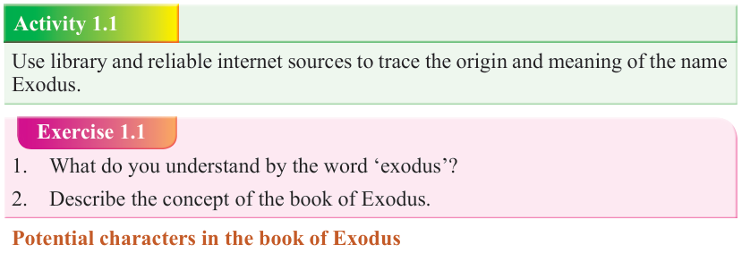

Form Two
Tanzania Institute of Education (TIE)

Bible Knowledge
2


establishing this people as God’s chosen nation. All these driving purposes detailed in the book of Exodus reveal God’s love and compassion to His people.

Activity 1.1

Use library and reliable internet sources to trace the origin and meaning of the name
Exodus.
Exercise 1.1
1. What do you understand by the word ‘exodus’?
2. Describe the concept of the book of Exodus.

Potential characters in the book of Exodus
A character is a person, animal or object presented in a literary work. Characters are essential to a good story, but it is the main character that is important in a plot.
Exodus has a tight cast of important characters to keep an eye on.
God

God appears as a main character in the book of Exodus. In the book of Exodus, God
appears to be compassionate, loving, merciful, and mighty. He shows kindness to His
suffering people in Egypt. However, He showed Pharaoh, Egyptians and the people of Israel that He is the only Mighty and benevolent God to those who obey Him.
Moses
In the book of Exodus, Moses is a great prophet and leader who served as a go-between God and His people. Moses negotiated with Pharaoh for Israel’s freedom; however, Pharaoh refused and God empowered Moses to bring Israelites out of
Egypt; he led the people towards the Promised Land, administered God’s laws to the people of Israel, and even pleaded for mercy on Israel’s behalf when they angered
God. He is a model of leadership for both religious and civil leadership.
Aaron
Aaron was Moses’ brother and colleague in the mission of liberating and leading
Israelites to the Promised Land. He assisted Moses as a spokesperson, and eventually he was made a high priest, hence he became the father of Israel’s priesthood. He is well known for his compassion and love for peace. He died on Mount Hor at the age of 123.
Pharaoh
Pharaoh, the ruler of Egypt, was the chief antagonist in the story of the Exodus.
Pharaoh enslaved the nation of Israel and committed infanticide. Pharaoh was worshiped as part of the Egyptian pantheon, a lesser god laying an illegitimate claim to God’s people. God defeated Pharaoh and the gods of Egypt by sending a series of ten devastating plagues, and finally He destroyed the Pharaoh’s army in the Red Sea.